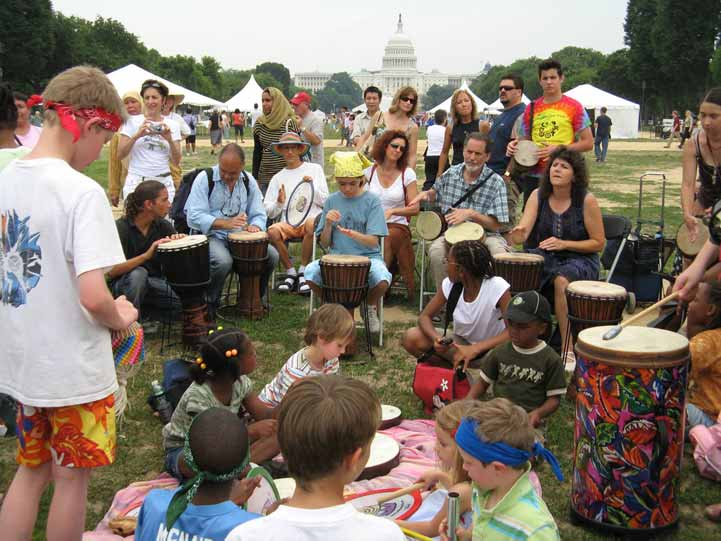
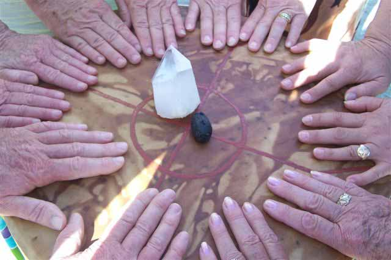
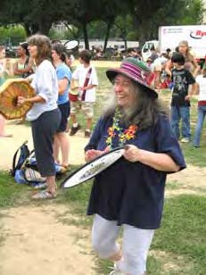

Dream Network Journal editor, Roberta Ossana, calls this kind of event “The intersection between dreams and waking.” In my mind’s eye, I picture two planes intersecting, a point where dreaming becomes waking reality. Drum Dance and Dream for Peace was such an event, growing out of the fertile soil of dreams on the World Dreams Peace Bridge as surely as roses climb a trellis.
On Monday, June 25, on the National Mall in Washington, DC, nearly 200 people (over half of them children) joined in a drumming circle that began in the light of a dream. Over a year before the event that she was asked to create for The World Children’s Festival, Mary Whitefeather Joyce dreamed of standing in a circle in a grassy place, drumming with a group of mostly children. Even earlier, the dreams of other members of the Peace Bridge had foreshadowed this scene.
On the Mall, the Ceremony for the Future of the World’s Children, foreseen and described by the Native elder Wovoka, was led by Valley Reed of Dallas, Texas. She introduced the Ceremony from the World Stage, leading the children to a grassy area outside the stage enclosure. Later she said: “The song I played on my flute came to me in my dreams the night before, and played all night long. I played the song on my Native American Flute and led the children to the blessing ceremony where we made offerings of prayers with wild rice, Indian corn, sage, and tobacco for the future of the children of the World.”
The Ceremony, like the Festival itself, was about children expressing themselves. During the Ceremony each child, wearing a headband of one of the colors of the four direction, said a prayer from the heart for the children of the world: for clean air, plenty of food for everyone, pure water, peace.

Then the drumming began. People came from everywhere, drawn by their own dreams and visions for peace. From New Jersey came Sharon Silverstein with her 20 djimbes; her friend Bernadette; and a bag full of bells, triangles, shakiras and other sound makers—Sharon, who told me the day I met her on the telephone, “I have to come. It’s crazy, but I have to come, and I want to lead the drumming circle.”
An entire convoy of moms, with as many children as they could pack into their vans, drove from southern Virginia, where they camped out on the lawn of a friend’s home in nearby Woodbridge, before taking the subway next day to the Mall. For many of the kids, it was their first trip to the nation’s capitol.
On the faces of the people drumming, it was possible to read the dreams of many nations. Two Muslim mothers, heads covered, held their babies up to pat the djimbes. One well dressed matron from Chile, a participant in the Festival, whirled ecstatically in her electric blue dress, hand drum held high above her head, remarked after the drumming was over, “I think I’ve found a new career!”
Scores of the tourists who flock to the museums on the Mall during the summer were lured by the sound of the drums. From UpBeat Drum Circles in Los Angeles we had received a donation of forty hand drums of various sizes. I went around the circle handing out drums to those who had none. One elderly Chinese couple, having had their fill of drumming tried to hand their drum circles back to me. “No,” I told them. “You can keep them.”

A smile lit the woman’s face. “Souvenir?” “Yes. Souvenir.” She tucked the two drums into her oversized black handbag as they strolled off down the Mall.
The beatific smiles on the faces of the children, caught up in the joy of pounding the beat, made months of work worthwhile. After the drumming was over and the drums were being loaded back into the van, an elderly homeless man, one of many who frequent the Mall, stayed on in the circle, sitting with a borrowed djimbe, demonstrating African rhythms to a cluster of teenagers.
From Seoul, South Korea with his daughter Eloisa, Jeremy Seligson not only discovered that the young woman organizing the Festival workshops was his neighbor from Seoul (no kidding), but Jeremy was carrying a dream of his own.
Jeremy, who dreamed the original Peace Train dream (the train he rode on bore the banner “Peace Train” traveled across America to Washington) had come to Washington not only to drum, dance and dream, but to conduct a Peace Train Workshop for the Festival.
“Although our Children’s Peace Train workshop was scheduled for only one hour,” Jeremy wrote the next day in his ‘Children’s Peace Train Report from Washington, DC’, “it went on for three. From the very beginning there was a steady stream of children with their parents and even one whole class of 21 little students from DC and their teachers coming in to sit in waves at the work table and draw a picture of peace in their lives.”
Jeremy brought along copes of his newly completed Children’s Peace Train book, which he distributed to participants in the workshop. His comment? ”Now the Children’s Peace Train really has come to WA. DC.” Of course, Washington was not the only site of Drum Dance and Dream for Peace, in either dreaming or waking reality. Beginning on Saturday, June 23, from Mexico to Canada, from California to Rhode Island, from Boston to Baghdad, people were drumming for peace around the globe.

In Mexico City a small group of women made an altar of fresh flowers and photos of their children. They passed the drum, saying aloud their prayers for peace for the children. In Warwick, Rhode Island, Laura Atkinson (who earlier in the week had dreamed that Peace Bridge member May Tung who died last year came to remind her to buy extra materials for the workshop) led children at the Warwick Museum in a drum making workshop.
In Noe Valley, California, Jill Pierce led free drumming classes for children all day long at the Music 4 All center there.
In the high Sierras in California, members of the Rainbow Medicine Blanket Council made ceremony with the World Drum, which began last year in Norway and has been traveling to drum circles around the world to drum Jean Campbell from the World Dreams Peace Bridge calls people to the drumming circle with one of 40 drums donated by UpBeat Drum Circles in Los Angeles, to be given away on the Mall. for peace. The World Drum came via Hawaii, and was traveling to PA.
Drum Dance and Dream for Peace had the magical feeling of dreams, a place in which anything can happen. At Bridgewater State College in Massachusetts, Professor Curt Hoffman who’d met with a small group of drummers at the sacred site which was the site of the solstice drumming circle at the 2006 IASD Conference, was surprised when they were joined in drumming for the children by an entire Physical Education class, out for a hike.
In the one day of Drum Dance and Dream for Peace, donations to the 1,000 Drums Project, funds being collected for the refugee children of Iraq, doubled. One night, shortly after the photographs from Drum Dance and Dream for Peace were put up on the World Dreams web site, I had the following dream:
As I watch, each of the photos from the slide show created for the web site individually floats above a section in an energy grid that surrounds the Capitol building at the end of the National Mall. One by one the slides hover, and then project their pixels into the ground below, sinking slowly into football-field size grid sections until the image appears on the ground before the Capitol. I wake while watching one specific photograph do this. It is the photo of a young boy playing one of the djimbes. He is totally caught up in the music, blissfully enjoying the beat of the drum, oblivious to anything else.
As I wrote to the Peace Bridge group list, “It is hard to drop bombs on children when teaching them the joy of music.”
For more about Drum Dance & Dream for Peace: the dreams, the global response & the photographs, go to www.worlddreamspeacebridge.org/drumming